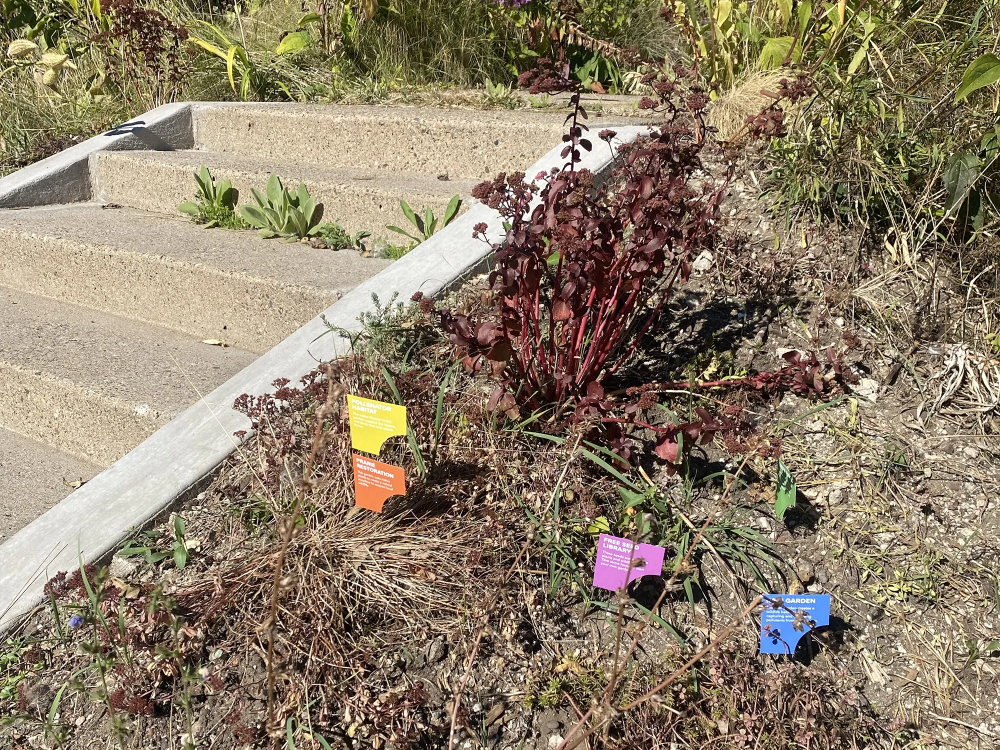

Individual action to improve the environment can feel invisible, ineffectual, and discouraging. How can we motivate engagement by showing the collective impact of these beneficial projects?

The Natural Neighborhood Network connects sustainable gardens throughout South Minneapolis. Every garden makes a difference, but together they create a thriving habitat for the nature next door.
Problem Statement
Project Statement
People care deeply about their natural surroundings. Our relationship to the environment is a connection to a wider, more complex, existence. It allows one's focus to shift from immediate stresses to the vibrancy of the world and the calming reliability of the seasons. Regional landscapes help define a community, whether agricultural or wild, rural or urban, temperate or tropical, there is pride in how nature reflects local character. Similarly, an individual uses nature to express their values through lawn care, a garden, hunting and conservation, or affinity for a local park. This capstone project aims to engage these tendencies to encourage sustainability and awareness.
A single project has a real, but limited, footprint. A single rain garden or pollinator sanctuary can improve the local environment, but at scale a series of similar projects will dramatically improve waterways and create migratory corridors. Similarly, a single project can spark neighborly curiosity and learning while large scale engagement will lend momentum to collective advocacy and education.
The Natural Neighborhood Network uses design to aid this momentum by creating a vehicle to connect small, diverse, individual projects together into an empowering web. It is a physical marker that will use design to tie unique personal projects to others through intent and execution.
My interest in this project is tied to seeing the changes in Minnesota’s landscape due to a warming climate. The loss of ash trees makes this shift evident. Milder winters allow invasive insects to spread further into the state. A less visible impact is the long term change in native regional biomes.
Emerald ash borer tree dieback. Source: Botanish
Minnesota has four distinct biomes; prairie grassland, aspen savanna, coniferous forests, and deciduous forests. The USDA plant hardiness map shows gradual shifts in growth zones, and the landscapes we are familiar with will change to adapt. The forests Minnesotans are so proud of are retreating northwards.
This transformation is overwhelming: it impacts quality of life, health, agriculture, and industry. Its scope makes a single person insignificant. Its importance makes a single person powerless. There is a term coined specifically to describe this phenomenon in global warming - the Hyperobject. It is real, it has real impact, but the change happens at a level that is out of scale we only see its footprint.
Project Background: Minnesota is Changing
Project Background: Previous Experimentation
How can communities respond to an issue that is present, yet remote?
How can an individual feel they are engaging with a problem that is out of view?
I have explored these questions in projects throughout the MAGWD Program. Using animated infographics to illustrate the scope change in time and landscape, to create a universal labeling system for conservation and pollution mitigation, and to map individual’s initiatives.
Stills from ‘Minnesota’s changing biomes’ infographic animation. 2022.
Example images of the ‘Root Warning Project’. 2024.
Through this work, I recognized that to make the human response to global warming visible and impactful it needed to be viewed at the same overwhelming scale. I needed to highlight the collective momentum that comes from diverse small scale projects working together. Ultimately, even with this realization, my previous projects felt frustrated and insufficient. I wanted to continue with these themes in my Capstone work, but felt my early attempts seemed disconnected from real application.
Gradually I came to the realization that I needed to start at the smallest, most personal scale: I was inspired by the local, individual, projects supporting sustainability I would see on everyday walks around my neighborhood. Local sustainable gardens are a commitment to improve the environment through direct, individual, action. Through planning & digging, blisters and back-aches a gardener engages with their immediate space and nature as a whole. This effort should be celebrated, and I was excited to design something that would do that for my neighbors in south Minneapolis.
As I traveled the neighborhood I started to document rain gardens, pollinator gardens, and wildlife sanctuaries. These projects had a look that distinguished them from the average yard, there was an eyecatching wildness that was both intentional and personal.
What were the commonalities and variations between them?
How were they presented, and what interpretive information was added?
Observation & Ideation
A selection of sustainable garden images collected on daily walks.


The gardeners were shaping their space.
This resonated with me as I have a background in sculpture and industrial design. It was exciting to think that I could use these skills in my project. My neighbors were designing their spaces to be functional, healthy, and beautiful. I wanted to create signage that would work to elevate and connect these efforts.
Research & Specification
The collected neighborhood signage provided numerous leads for further research. In deciding to keep the scope of the project locally limited I began to research the grants, organizations, and programs supporting sustainable gardening.
The first key takeaway from this research: Local governments and institutions support action at a residential scale because the effects are deep and diverse. Small individual projects have an immediate impact locally, improving the lives of residents and supporting the health of the area. Continued funding is proof of the results of such projects.
To add more depth to this insight I reached out to local organizations like MetroBlooms and Lawns to Legumes. I learned about the successes and challenges they had in outreach, the diversity of homeowner and renter participants, and the enthusiasm of the public for developing and showing off their projects. In these conversations with experts from local organizations it became clear that each had specific goals. They were focused on a particular problem and solution, and although different groups might overlap in execution they were largely distinct and uncoordinated.
This was the second key takeaway: there is a lack of overarching connection as each initiative was distinct and disconnected. In reality, each sustainable project amplifies the impact of those nearby. This should be celebrated, but locally the beneficial links were not being realized. The Natural Neighborhood Network would fulfill this need.
Sustainable garden survey promotional poster.
To balance the information gained from expert organizations I looked to directly engage my potential audience. I had defined a need, but would individuals be interested in participating? Were they open to signage on their property? What were they passionate about, and did they want to communicate that with their neighbors?
I created a public survey and promoted it in the community with fliers and posters. Although the response from local garden shops was not particularly fruitful, food co-ops and coffee shops did reach local sustainable gardeners. The survey allowed clarification of the types of gardens that were already existing, common, and viable for participation.
This informed third key takeaway: Gardeners are an enthusiastic and engaged community, and are very open to signage and local connection.
In parallel with the local research I was finding forms, materials, and projects that were sympathetic to the overall idea. These visual components informed my conversations, and in turn the conversations prompted design ideas. Priorities began to emerge. If the design was to connect gardens across the neighborhood it needed to be eye-catching and durable. To celebrate each individual project it would need to invite a passerby to interact. For the signage to be applicable to the entire community it would need to be flexible and adaptable. These design cues were refined with a mood board.
Moodboard
Design & Refinement
Form & Material Exploration
The mood board informed the iteration of form ideas. Hand sketches provided initial experimentation with direction, layering, scale, and modularity. Three directions were pursued as digital drafts. A vertical system, a gathering of fragmented horizontal strata, and an array of badges that could radiate and expand.
Initial form exploration sketches.
Digital mock-ups provided exploration of how scale, color, and material impacted legibility and interest. For the signage to be both durable and sustainable I gravitated towards recycled PET plastic.
Digital refinement and color experimentation.
PET sheeting material can be easily produced at a local scale, and there is a fledgling DIY industry collecting and recycling the PET into new products. The plastic is commonly used for plastic bags and bottles. It is plentiful, colorful, and malleable.
Material application and samples.
The puzzle design was selected for being colorful and active, like a yard sculpture or pinwheel. Its modular flexibility can be adapted and expanded to signify a variety of garden initiatives. The form references a puzzle-piece, when assembled with others a larger image becomes clear, just as the participating garden is one of many in the neighborhood that will create an impact. The arc and block shape create visual momentum that can point a viewer to the next yard, the next sustainable project.
Digital exploration Puzzle bits
The primary type choice is Proxima Soft. It is friendly and cleanly legible, and the rounded terminals reference the cutting toolpath used in the machining of the signage. The supporting font is Apparat, and forms the structural body for text.
With the initial design completed, a prototype was created and tested in the environment. This paper mock-up prompted refinement of type scale, spacing, and overall size.
Paper Prototype
Physical & Digital Prototypes

Experimenting with the physical prototype in actual garden spaces inspired initial sketches for the supplemental website for the Natural Neighborhood Project. The site needed to be the hub of the network, hosting project details and motivating engagement.
Website layout sketches and theme exploration.
The design was refined to reinforce the simple color and shape of the physical signage. Emphasis would be placed on how the individual components described specific garden projects.
Through animation the website would demonstrate how the puzzle elements interact and combine, just like a gardeners sustainable plantings connect and support each other. Wireframing helped to refine the user flow and reduce the amount of information for clarity and legibility. A functional figma prototype refined the design decisions and provided a template for final development.This resonated with me as I have a background in sculpture and industrial design. It was exciting to think that I could use these skills in my project. My neighbors were designing their spaces to be functional, healthy, and beautiful. I wanted to create signage that would work to elevate and connect these efforts.
Website mockup.
Web flow.
Finalization
The physical and digital prototypes supported the final stage of development: production and coding.
The signage was created using recycled acrylic sheeting in approximate colors. Although not the exact material or specified color of a final production run, the puzzle pieces produced through laser cutting and etching were a realization of the design
The interpretive website uses basic HTML, CSS, and Javascript to make a robust and responsive user experience. The animations were tricky to accomplish with responsiveness and resizing, but in the end they reflect the fun and engagement the project embodies with physical gardening.
The culmination of this capstone journey is the Natural Neighborhood Network website. It gathers the research and refinement to present a cohesive system built for my neighborhood in south Minneapolis.
The webpage acts as an introduction to the project, and an invitation to learn and connect. It catches neighbors who may have been intrigued by the signage system of a garden down the street, and welcomes them to learn and participate.
Images!
In clear terms it highlights sustainable garden projects that are impactful, locally supported, and fun. It uses color and shape to define an identity as a distinct puzzle piece for each garden initiative. A visitor may respond to the idea of prairie wildflowers, water health, or tree cover, and each puzzle piece makes that topic defined and approachable. By focusing on one garden project and its real-world benefits makes sustainability seem manageable and fun. In showing the connection to other Natural Neighborhood Network topics even a small focus garden project feels valuable, joining larger collective action.
more Images!
Approaching the overwhelming threat of global warming through tiny, individual actions engages the caring intention of everyday people. The Natural Neighborhood Network visualizes both the support structures and the widespread community commitment in Minneapolis. Using signage, it makes each effort noticeable and celebrates its impact while linking it to others.
Collected together, the good work of the neighborhood becomes visible. The impact becomes tangible. It motivates involvement. This momentum can respond to a problem of scale like the changing climate in Minnesota, it is the visible footprint of expansive collective energy and beneficial effort.